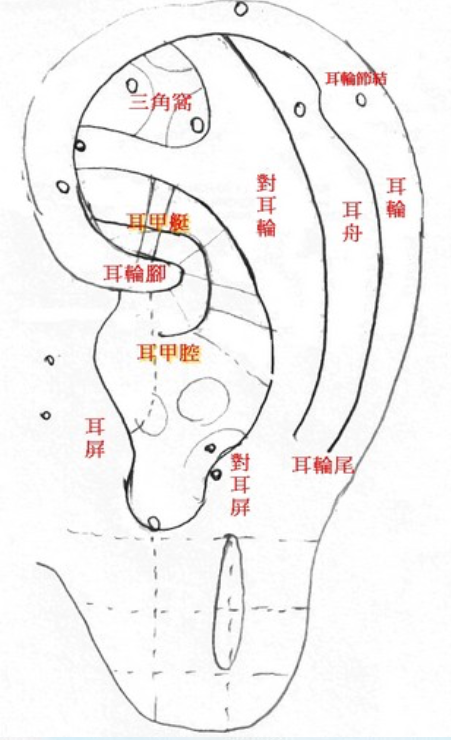
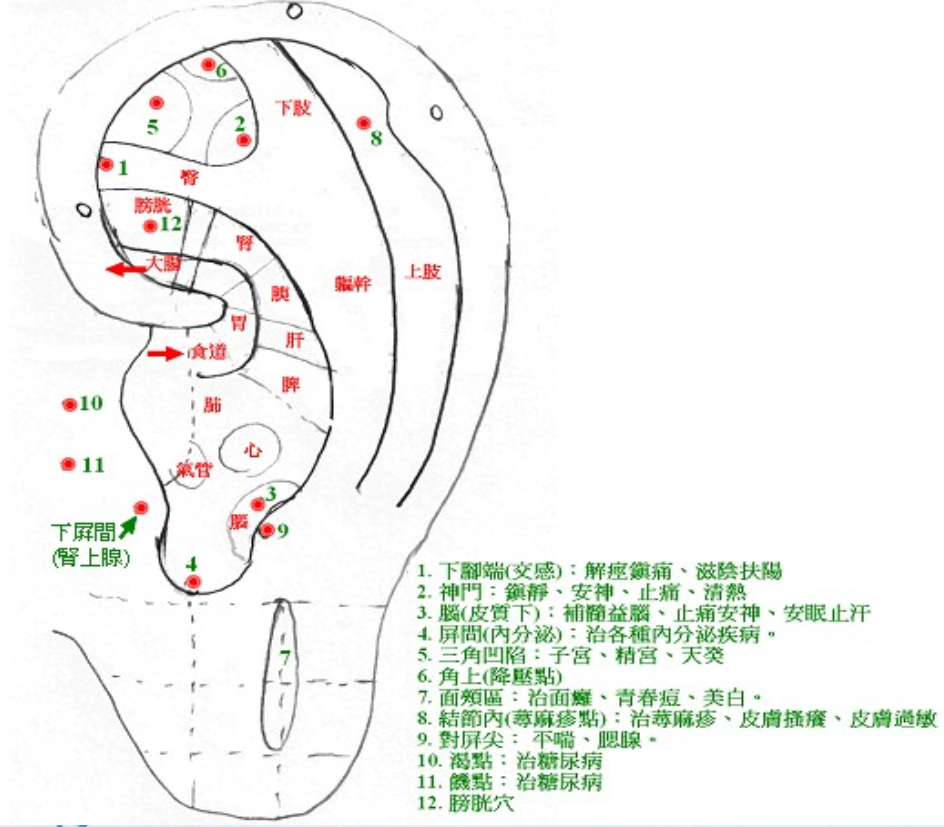

         <h2>耳穴全息<br></h2>         
         <br>
         <br>
         <h1>重要耳穴及其功能</h1><br>
         下腳端 ( 交感 ) : 解痙鎮痛 、 滋陰扶陽 <br>
         神門 : 鎮靜安神 、 止痛 、 清熱 <br>
         腦 ( 皮質下 ) : 補髓益腦 、 止痛安神 、 安眠止汗<br>
         屏間 ( 内分泌 ) : 治各種内分泌疾病 <br>
         三角凹陷 : 子宮 、 精宮 、 天癸 <br>
         角上 ( 降壓點 ) <br>
         面頰區 : 治面癱 、 青春痘 、 美白 <br>
         結節内 ( 蕁麻疹點 ) : 治蕁麻疹 、 皮膚搔癢 、 皮膚過敏 <br>
         對屏尖 : 平喘 、 腮腺 <br>
         渴點 : - 治糖尿病 <br>
         饑點 : 治糖尿病膀胱穴白 .<br>


